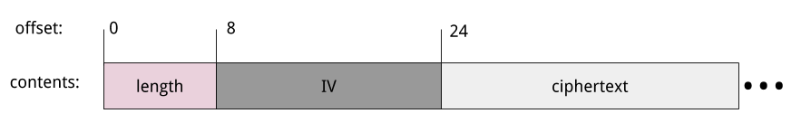

Nine years ago, I wrote a post on AES encryption in Python using the PyCrypto library. Interestingly, it remains a moderately popular post on my site to this day. Since I've recently been checking out Go's cryptographic libraries, it seemed like a good idea to redo that post, this time in Go.
Go subscribes to the same "batteries included" philosophy as Python, but it has much better built-in support for crypto right in the standard library. Therefore, the code in this post has no third-party dependencies - all it needs is Go itself.
Disclaimer: creating custom crypto protocols, even based on known algorithms, is a bad idea. There are many clever attacks that would leverage the smallest weakness in protocols to gain advantage, and avoiding them by non-experts is close to impossible. This post should only be seen as a tutorial on very basic usage of the Go AES package. Please use existing protocols (such as TLS) to maintain secure connections.
Simple AES encryption
Let's start with a simple example of encrypting a buffer of data. Go has several different block cipher implementations; they all implement the cipher.Block interface:
type Block interface {
// BlockSize returns the cipher's block size.
BlockSize() int
// Encrypt encrypts the first block in src into dst.
// Dst and src must overlap entirely or not at all.
Encrypt(dst, src []byte)
// Decrypt decrypts the first block in src into dst.
// Dst and src must overlap entirely or not at all.
Decrypt(dst, src []byte)
}
The concept of the block size is central here. Block ciphers typically operate on a single block of data, and a mode of operation is an algorithm that uses block operations to encrypt a sequence of data of arbitrary length. In the examples herein we're going to be using the CBC mode.
Here's how it looks:
// Dummy text to encrypt. Size should be multiple of AES block size (16).
text := bytes.Repeat([]byte("i"), 96)
// Create a new AES block cipher.
block, err := aes.NewCipher(key[:])
if err != nil {
log.Fatal(err)
}
// Create a new CBC mode encrypter using our AES block cipher, and use it
// to encrypt our text.
ciphertext := make([]byte, len(text))
enc := cipher.NewCBCEncrypter(block, iv)
enc.CryptBlocks(ciphertext, text)
The key for AES has to be a byte slice of size 16, 24 or 32; this determines the strength of the AES encryption (AES-128, AES-192 or AES-256). We can generate a key using cryptographic hashing from any password:
key := sha256.Sum256([]byte("kitty"))
Another thing we'd need for the encrypter code snippet to work is an initialization vector (IV) to start off the block chaining algorithm:
iv := make([]byte, aes.BlockSize)
if _, err := rand.Read(iv); err != nil {
log.Fatal(err)
}
Here we generate a random IV; this is common practice. The IV is considered a cryptographic salt.
Decryption
Given a key, IV and the ciphertext, decrypting looks very similar to encrypting:
block, err := aes.NewCipher(key[:])
if err != nil {
log.Fatal(err)
}
newtext := make([]byte, len(ciphertext))
dec := cipher.NewCBCDecrypter(block, iv)
dec.CryptBlocks(newtext, ciphertext)
Encrypting and decrypting files
I've reimplemented the file encryption/decryption functions from the Python post in Go. I won't post the whole code, but you can find it here. Here's how encryption works:
- Read the input file, and open a new output file
- Compute the length of the input file (plaintext), and write it into the output file as an 8-byte litle endian integer.
- Pad the plaintext to a multiple of AES block size, using random padding [1].
- Generate a random IV and write it into the output file.
- Use the IV and the key to encrypt the plaintext into ciphertext.
- Write the ciphertext into the output file.
Here's the layout of the output file, assuming AES block size of 16 bytes:
Decryption reverses this process. It reads the IV from the file and uses that, along with the key, to decrypt the ciphertext. It then truncates the output plaintext to the length specified in the file.
| [1] | This is not the standard way padding is done for block ciphers, but it's the way the Python sample worked so I wanted to keep the two implementations compatible. Usually padding is done in a way such that storing the explicit length can be avoided. That said, I believe this is only an efficiency issue (extra 8 bytes per file). My approach should not be less secure, especially with the Go version using random padding as opposed to deterministic padding in the Python version. |